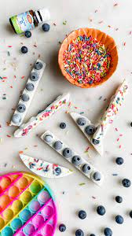

Popit Yogurt Treat
( Use those popits that I know we all have and let your kids make a treat )

Description:
If your household is anything like mine you have many popits throughout the house.
I found this treat and just knew it was perfect for my family; maybe it will be perfect for yours.
My daugter loves to help in the kitchen and this she was able to do all by herself!
Ingredients:
- Popit (not ingredient, but needed!)
- Yogurt, Greek Vanilla
- Blue berries (or chocolate chips)
- Sprinkles
Steps:
- Clean the popit and pop all the buttons so that they form cups
- Place a blueberrie inside each pop cup
- Cover with yogurt
- Add sprinkles!